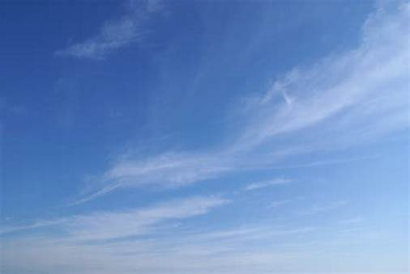
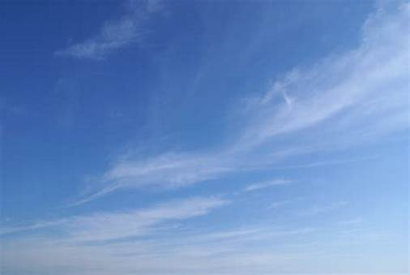

Bulan
Bulan adalah satelit alami Bumi satu-satunya dan merupakan satelit terbesar kelima dalam Tata Surya.
Read moreNama : Christin Rachell Jocom
NIM : 220211060033
Saya seorang Mahasiswa Prodi Teknik Informatika, Universitas Sam Ratulangi. Ini adalah Tugas Pemrograman Web yang saya kerjakan.

"Just trust me, you'll be fine"
Djo - End of Beginning
Berikut ini adalah kumpulan gambar langit biru ~

 

Bulan adalah satelit alami Bumi satu-satunya dan merupakan satelit terbesar kelima dalam Tata Surya.
Read morePlanet adalah benda astronomi yang mengorbit sebuah bintang.
Read moreMatahari adalah bintang di pusat Tata Surya.
Read moreEmail: christin.jocom.01@gmail.com
Phone: 08123456789